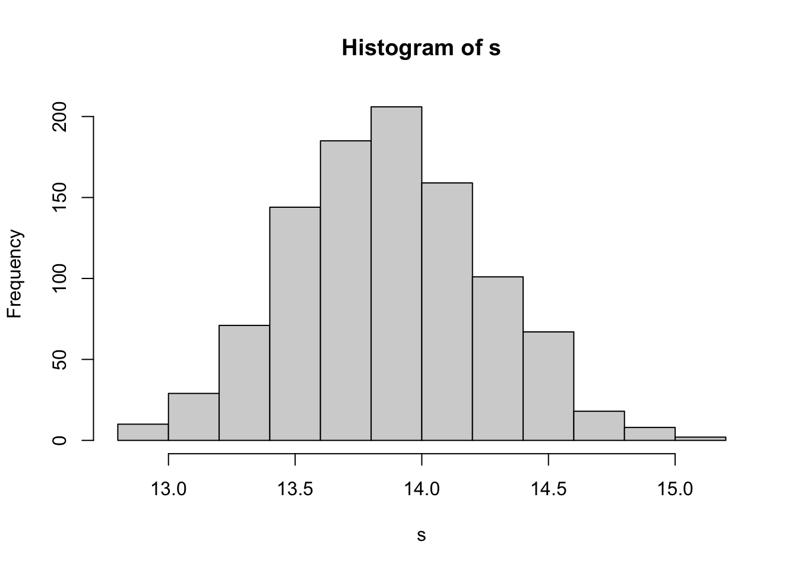
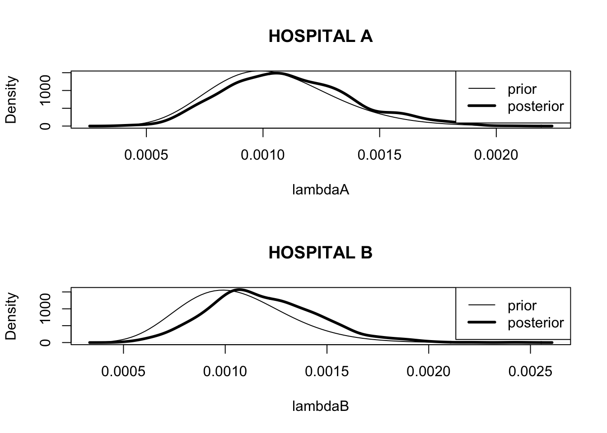

Chapter 3 Single-Parameter Models
3.1 Normal Distribution with Known Mean but Unknown Variance
Assuming we have a sample {\(y_j\)} from a normal distribution with mean 0 and variance \(\sigma^2\). Assuming the prior \(g(\sigma^2) \propto 1/\sigma^2\), simulating from the posterior.
library(LearnBayes)d <- with(footballscores,
favorite - underdog - spread)
n <- length(d)
v <- sum(d ^ 2)P <- rchisq(1000, n) / v
s <- sqrt(1 / P)
hist(s)
quantile(s, probs = c(0.025, 0.5, 0.975))## 2.5% 50% 97.5%
## 13.14654 13.85587 14.629023.2 Estimating a Heart Transplant Mortality Rate
Have a sample {\(y_j\)} from a Poisson(\(e \lambda\)) distribution where the exposure \(e\) is known. Assigning \(\lambda\) a gamma(\(\alpha, \beta\)) prior.
Predictive density:
alpha <- 16; beta <- 15174
yobs <- 1; ex <- 66
y <- 0:10
lam <- alpha / beta
py <- dpois(y, lam * ex) *
dgamma(lam, shape = alpha, rate = beta) /
dgamma(lam, shape = alpha + y, rate = beta + ex)
cbind(y, round(py, 3))## y
## [1,] 0 0.933
## [2,] 1 0.065
## [3,] 2 0.002
## [4,] 3 0.000
## [5,] 4 0.000
## [6,] 5 0.000
## [7,] 6 0.000
## [8,] 7 0.000
## [9,] 8 0.000
## [10,] 9 0.000
## [11,] 10 0.000Posterior density:
lambdaA <- rgamma(1000, shape = alpha + yobs,
rate = beta + ex)Data from a different hospital:
ex <- 1767; yobs <-4
y <- 0:10
py <- dpois(y, lam * ex) *
dgamma(lam, shape = alpha, rate = beta) /
dgamma(lam, shape = alpha + y, rate = beta + ex)
cbind(y, round(py, 3))## y
## [1,] 0 0.172
## [2,] 1 0.286
## [3,] 2 0.254
## [4,] 3 0.159
## [5,] 4 0.079
## [6,] 5 0.033
## [7,] 6 0.012
## [8,] 7 0.004
## [9,] 8 0.001
## [10,] 9 0.000
## [11,] 10 0.000lambdaB <- rgamma(1000, shape = alpha + yobs,
rate = beta + ex)Prior and posteriors for two hospitals:
par(mfrow = c(2, 1))
plot(density(lambdaA), main="HOSPITAL A",
xlab="lambdaA", lwd=3)
curve(dgamma(x, shape = alpha, rate = beta),
add=TRUE)
legend("topright",legend=c("prior","posterior"),
lwd=c(1,3))
plot(density(lambdaB), main="HOSPITAL B",
xlab="lambdaB", lwd=3)
curve(dgamma(x, shape = alpha, rate = beta),
add=TRUE)
legend("topright",legend=c("prior","posterior"),
lwd=c(1,3))
3.3 An Illustration of Bayesian Robustness
Assuming normal sampling (known standard deviation), compare the use of two priors on the mean \(\mu\).
quantile1 <- list(p=.5, x=100)
quantile2 <- list(p=.95, x=120)
normal.select(quantile1, quantile2)## $mu
## [1] 100
##
## $sigma
## [1] 12.15914mu <- 100
tau <- 12.16
sigma <- 15
n <- 4
se <- sigma / sqrt(4)
ybar <- c(110, 125, 140)
tau1 <- 1 / sqrt(1 / se ^ 2 + 1 / tau ^ 2)
mu1 <- (ybar / se ^ 2 + mu / tau ^ 2) * tau1 ^ 2
summ1 <- cbind(ybar, mu1, tau1)
summ1## ybar mu1 tau1
## [1,] 110 107.2442 6.383469
## [2,] 125 118.1105 6.383469
## [3,] 140 128.9768 6.383469Compare two possible priors for \(\mu\):
tscale <- 20 / qt(0.95, 2)
tscale## [1] 6.849349par(mfrow=c(1, 1))
curve(1 / tscale * dt((x - mu) / tscale, 2),
from=60, to=140, xlab="theta",
ylab="Prior Density")
curve(dnorm(x, mean=mu, sd=tau), add=TRUE, lwd=3)
legend("topright", legend=c("t density",
"normal density"),
lwd=c(1,3))
norm.t.compute <- function(ybar){
theta <- seq(60, 180, length = 500)
like <- dnorm(theta, mean=ybar,
sd=sigma/sqrt(n))
prior <- dt((theta - mu) / tscale, 2)
post <- prior * like
post <- post / sum(post)
m <- sum(theta * post)
s <- sqrt(sum(theta ^ 2 * post) - m ^ 2)
c(ybar, m, s)
}summ2 <- t(sapply(c(110, 125, 140),
norm.t.compute))
dimnames(summ2)[[2]] <- c("ybar", "mu1 t",
"tau1 t")
summ2## ybar mu1 t tau1 t
## [1,] 110 105.2921 5.841676
## [2,] 125 118.0841 7.885174
## [3,] 140 135.4134 7.973498cbind(summ1, summ2)## ybar mu1 tau1 ybar mu1 t tau1 t
## [1,] 110 107.2442 6.383469 110 105.2921 5.841676
## [2,] 125 118.1105 6.383469 125 118.0841 7.885174
## [3,] 140 128.9768 6.383469 140 135.4134 7.973498Compare two posterior densities:
theta <- seq(60, 180, length=500)
normpost <- dnorm(theta, mu1[3], tau1)
normpost <- normpost / sum(normpost)
plot(theta, normpost, type="l", lwd=3,
ylab="Posterior Density")
like <- dnorm(theta, mean=140, sd=sigma / sqrt(n))
prior <- dt((theta - mu) / tscale, 2)
tpost <- prior * like / sum(prior * like)
lines(theta, tpost)
legend("topright", legend=c("t prior",
"normal prior"),
lwd=c(1,3))
3.4 Mixtures of Conjugate Priors
Use a mixture of beta curves to reflect beliefs that a particular coin is biased.
curve(.5 * dbeta(x, 6, 14) + .5 * dbeta(x, 14, 6),
from=0, to=1, xlab="P", ylab="Density")
probs <- c(.5, .5)
beta.par1 <- c(6, 14)
beta.par2 <- c(14, 6)
betapar <- rbind(beta.par1, beta.par2)
data <- c(7, 3)
post <- binomial.beta.mix(probs, betapar, data)
post## $probs
## beta.par1 beta.par2
## 0.09269663 0.90730337
##
## $betapar
## [,1] [,2]
## beta.par1 13 17
## beta.par2 21 9Compare prior and posterior densities for the probability coin lands heads.
curve(post$probs[1] * dbeta(x,13,17) +
post$probs[2] * dbeta(x,21,9),
from=0, to=1, lwd=3,
xlab="P", ylab="DENSITY")
curve(.5 * dbeta(x, 6, 12) +
.5 * dbeta(x, 12, 6), 0, 1, add=TRUE)
legend("topleft", legend=c("Prior", "Posterior"),
lwd=c(1, 3))
3.5 A Bayesian Test of the Fairness of a Coin
Testing if a coin is fair. Observe 5 heads in 20 flips.
P-value calculation:
pbinom(5, 20, 0.5)## [1] 0.02069473Bayesian test of fairness using a mixture prior.
n <- 20
y <- 5
a <- 10
p <- 0.5
m1 <- dbinom(y, n, p) * dbeta(p, a, a) /
dbeta(p, a + y, a + n - y)
lambda <- dbinom(y, n, p) / (dbinom(y, n, p) + m1)
lambda## [1] 0.2802215pbetat(p, .5, c(a, a), c(y, n - y))## $bf
## [1] 0.3893163
##
## $post
## [1] 0.2802215prob.fair <- function(log.a){
a <- exp(log.a)
m2 <- dbinom(y, n, p) * dbeta(p, a, a) /
dbeta(p, a + y, a + n - y)
dbinom(y, n, p) / (dbinom(y, n, p) + m2)
}n <- 20; y <- 5; p <- 0.5
curve(prob.fair(x), from = -4, to = 5,
xlab="log a",
ylab="Prob(coin is fair)", lwd=2)
n <- 20; y <- 5
a <- 10; p <- .5
m2 <- 0
for (k in 0:y){
m2 <- m2 + dbinom(k, n, p) * dbeta(p, a, a) /
dbeta(p, a + k, a + n - k)
}
lambda <- pbinom(y, n, p) / (pbinom(y, n, p) + m2)
lambda## [1] 0.2184649